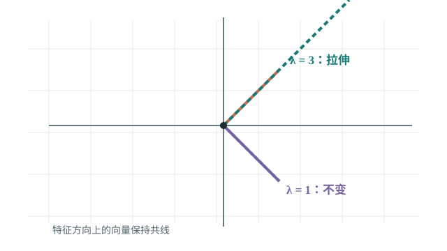

特征值与特征向量
多数向量经过矩阵变换后会改变方向，但有些特殊方向仍与原向量共线。特征向量抓住这些不变方向，特征值记录沿该方向的伸缩倍数。
先提出问题：有没有方向经过变换后仍然不拐弯？
想象一个平面经过拉伸和剪切。大多数箭头会改变方向，但某些箭头可能只变长、变短，甚至反向。它们就是特征向量。
特征向量把一个复杂的线性变换分解为若干个“沿特殊方向的简单伸缩”。如果这些方向足够多且线性无关，矩阵就可以被对角化。
先看图形：沿特征方向只改变长度

核心直觉普通向量要描述两个变化：方向变了多少、长度变了多少。特征向量把方向变化消掉，只留下一个标量 λ。
建立数学语言：Av=λv
对方阵 A，如果存在非零向量 v 和标量 λ 满足：
定义 1
那么 λ 是 A 的特征值，v 是对应特征向量。把右边移到左边：
要存在非零解，矩阵 A−λI 必须不可逆，因此：
这个方程称为特征方程。解出 λ 后，再求每个 λ 对应的零空间，得到特征向量。
推导与例题：从特征方程到对角化
取对称矩阵：
特征方程为 (2−λ)²−1=0，因此 λ=3 或 λ=1。
当 λ=3 时，v₁=(1,1)；当 λ=1 时，v₂=(1,−1)。直接代入检查：
把两个线性无关特征向量作为 P 的列，得到 P=[[1,1],[1,−1]]，D=diag(3,1)：
于是 A 的高次幂变得简单：Aᵏ=PDᵏP⁻¹。对角矩阵的幂只需分别对角元素取幂。
交叉验证特征值之和 3+1=4，等于 trace(A)=2+2；特征值之积 3×1=3，等于 det(A)=4−1=3。再把两个特征对直接代回 Av=λv，结果完全一致。
交互实验：沿特征方向伸缩
固定方向 v=(1,1)，拖动 λ 观察向量长度的变化。这里展示的是特征向量定义中的标量作用；本篇例题矩阵对应 λ=3 的方向。
特征方向实验室
A v = 3.0 v（方向保持不变）
边界与易错点
- 特征向量不能是零向量。 否则 Av=λv 对任何 λ 都成立，无法定义特征方向。
- 不是每个实矩阵都能在实数域对角化。 有的矩阵没有足够的实特征向量；有的需要复数域。
- 重复特征值不保证可对角化。 关键是能否找到足够多线性无关的特征向量。
- 特征值和奇异值不同。 特征值可以为负或复数；实矩阵的奇异值总是非负实数。
自测：快速验证特征向量
题目：A=[[4,0],[0,−2]] 的标准基向量分别对应什么特征值？
e₁=(1,0) 对应 λ=4；e₂=(0,1) 对应 λ=−2。第二个特征值为负，表示沿该方向反向伸缩两倍。
题目：矩阵 [[1,1],[0,1]] 是否可对角化？
特征值只有 λ=1，解 (A−I)v=0 得到 y=0，特征空间只有一维，找不到两个线性无关特征向量，因此不可对角化。